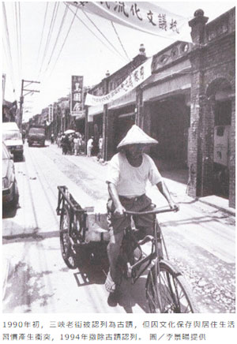
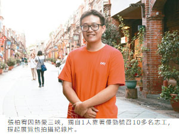

翻出舊照 看三峽老街百年風華
北大校友張柏宥籌畫 邀集藝術家、地方耆老 找來影像特產展出 看見三峽的故事
魏翊庭｜聯合報／新北市新聞｜2016年10月21日
三峽老街今年逢100周年，北大歷史系校友張柏宥深耕三峽多年，因4月老街發生地磚遭刨除事件，激發他籌辦「老街川流．常民的腳印」特展，記錄地磚事件，也透過舊照片、影像、藝術品，和文史講座等，展出三峽老街百年風華與文化底蘊。
「老街是一條河流，在上面川流不息的是常民的腳印。」張柏宥說，三峽老街因河而興，清代時發展出藍染、茶葉和樟腦等產業，後歷經日本人燒掉老街、市街改正而產業興盛，一度是海山地區首善之區，後隨河運沒落。
20年前三峽老街曾發生古蹟衝突爭議，今年4月又有地磚刨除事件，文史與生活間的衝突激發他把老街脈絡記錄下來，著手策展。
川流特展借用三峽老街店面，展出地磚刨除事件紀錄，並向三峽藝術家李梅樹之子、在地耆老李景暘調來三峽舊照片，還原幾十年前老街，呈現老街歷史脈絡。也介紹如棺木、藍染、米粉和茶葉等老街產業，張柏宥還為此去山上找藍染原料大菁。
川流特展另調借深耕三峽在地藝術家作品，如許晏豪的老街街景陶藝、張又然的藍染主題繪本和徐慕仁的三峽主題水彩畫，並從區公所借來老街模型，更啟動紀錄片拍攝計畫，邀三峽人分享心目中的老街。
特展將從10月29日至11月27日舉辦，並有2場講座，邀文史工作者林炯任及藝術家張又然分享三峽老街開發史，還舉辦老街懷舊童玩大賽。詳情可上臉書搜尋「老街川流．常民的腳印三峽老街常民故事特展」。
三峽老街展一人策展 「什麼都沒只有人脈」
「老街川流．常民的腳印」三峽老街常民故事特展策展人張柏宥，深耕三峽文史多年，策展之初沒考慮太多，秉著一股熱忱和傻勁一頭栽入；一開始沒有團隊、沒有錢，「只有人脈」，然而他的傻勁引出更多人跟著無償付出，「一切都從熱愛三峽開始」。
張柏宥是北大歷史系校友，目前就讀台北藝術大學博物館研究所，他來北大念書時，就深深被三峽的老東西吸引，老街、祖師廟，李梅樹紀念館，喜歡三峽濃厚文史氛圍，不是硬梆梆都市叢林；三峽更有豐富山林資源，他說「最關鍵是認識了在地人」。
張柏宥大學時透過閱讀田野資料，加上和當地人相處，聽故事耳濡目染，也加入「三峽客地方媒體」採訪在地故事，並擔任校園導覽志工，考上研究後在李梅樹紀念館擔任專案助理，頻繁「回」三峽，5、6年來深深喜歡上三峽，這次不惜犧牲寫論文時間，投入策展。
「1個人的效應，原來可以這麼大！」張柏宥自認 「只有人脈」，從北大歷史系、文化志工團、三峽客和李梅樹紀念館等團體募集志工，慢慢建立起展覽小組，幫忙辦活動、策展和拍紀錄片，約有10多人空閒時間投入，也獲得許多文史工作者幫助，希望帶領更多學弟妹走進三峽。